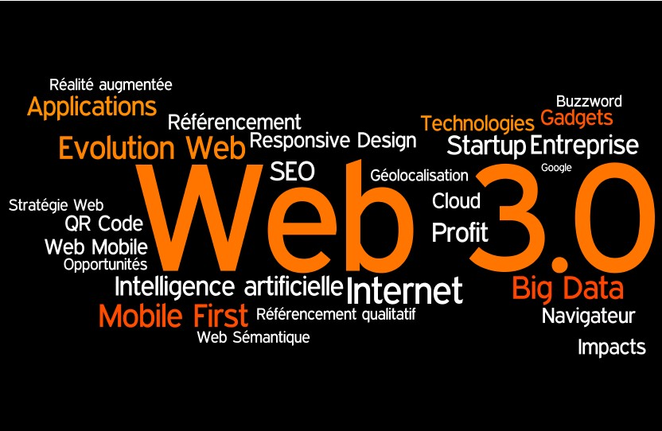

How has Tim-Berners Lee changed how we communicate?
Web Essay by Sean Downey
Introduction
This is an Web Essay based on Sir Tim Berner's Lee. Read the various sections to find out further info on him
Sir Tim Berners-Lee
Tim Berners-Lee is a computer scientistfrom London, who was born on 8th June 1955. He went to Oxford University and studied physics from 1973 to 1976 and later became a software engineer.
In 1989 Tim Berners-Lee invented the World Wide Web which was evolutional and has become one of the biggest technologies of all time. He also created the first web browser and editor. The earliest webpage was launched in August 1991 which gives users a brief introduction of the WWW and how to get started with their own websites. In 1994 Berners Lee founded the World Wide Web Consortium at computer lab at the institute of technology in Boston with the intention of making the web free and accessible for everyone.
In 2004 in London, Tim was recognised for his work and given a knighthood by the Queen. According to w3.org he was knighted for his
“services to the global development of the Internet"and most importantly for his invention of the World Wide Web.
In 2009 he was named in the ‘Time magazine’s list’ of the 100 Most Important People of the 20th century and deserves all the accolades for invention.
He even featured with a vintage computer at the opening ceremony of the London 2012 Summer Olympic Games. This was to honour his legacy and celebrate his revolution of the web.
To claim he had great success with the World Wide web is perhaps an understatement because it has made him a very wealthy man {according to reports Tim Berner’s Lee has a net worth more than £45.5 million}
Evolution of the web and web 1.0
When Berners-Lee introduced us to the World Wide Web in 1989 his aim was to share data back and forth through a web server. One of the earliest web browsers was Mosaic which was developed in 1993. It required knowledge of HTML codes etc to write to the website. The original internet was normally black and white which included text only.
At the beginning of the internet, the inventers did not know what to show on the computer screen. Web 1.0 was a static webpage which involved one-way communication. This was how the internet was used from 1998-2001, before Web 2.0 came into operation. The internet was first connected using a modem, which was slow to start up. It was the only way to connect to the internet before broadband. There has been a lot of change to the web since it was first created including the development of devices using the web

Web 2.0
Web 2.0 is the term used to describe the second generation of the World Wide Web. In the early 2000’s the use of the internet grew, with more and more people starting to use it worldwide. The idea of the web 2.0 started in 1999 by Darcy DiNucci and this approach was later developed further by Tim O’Reilly and Dale Dougherty in 2004. The change from Web 1.0 to Web 2.0 was gradual with Web 2.0 making it a lot easier for people to send and share information on the web. Web 1.0 limited people to what they could view. A big part in the development of Web 2.0 was that users began to communicate and interact with each other through various social platforms and email online. They could send and receive messages to and from each other with greater ease and speed with wireless broadband connections. Much of the global population today have signed up to and use networking sites such as Facebook, Instagram, and twitter.
Web 2.0 also allows users to create and publish web logs, view, and edit content on wiki, view photo galleries online and produce Audio and video casting files for others to view. Web 2.0 was also an effective way to allow people to stream and share videos, YouTube being a prime example.
Web 2.0 is a very useful tool for users to shop online and order home deliveries. Consumer sites like Amazon, eBay and Argos now have millions of daily users browsing or purchasing online.
Web 3.0
Web 3.0 is the newest version of the internet being driven by technological changes which will take over from Web 2.0. This next generation of Web 3.0 involves the use of semantic web which allows multiple devices to generate, share information and connect to others across a wide world network through analysing and searching for words. 3.0 web is more intelligent which will transform the web from a network of application and information to a more seamless and interposable whole. In the future there will be many more websites developed requiring a lot more web servers.
Web 3.0 will be a lot more innovative improving user experience with introduction of more advanced technology. Examples of 3.0 technology being used in this world is 3D portals, avatar, VAR headsets, integrated games, virtual web, 3.0 graphics etc.
Web 3.0 is the future of web as we know it. A lot of VR, remote systems and mobile devices are used through the web. Web 3.0 relies mostly on machines and provides users with more security. The main features of web 3.0 will be the use of artificial intelligence that will provide users with faster and more reliable results. Also, it will have better connectivity to allow information to be more easily sent and have access to more content through multiple applications connected to the web. It will also improve 3D Graphics used in the websites, on computer games, and e-commerce sites, etc.
The use of the web is still constantly evolving, and we can expect a lot of these coming changes to herald more advanced ways for users to search and use the web.


Thoughts on the internet today in the modern world
In this modern world the internet has now become a vital tool in allowing the world’s population to connect with each other. It enables people to connect, share information, and communicate virtually instantly with an ease and speed which was unimaginable until barely a generation ago.
The universality of mobile phone use has promoted the exponential growth of the internet’s use. We must consider that in 1989 mobile phones were in their infancy in terms of development and it was not until the smart phones evolved that the online shopping and ‘’tweeting’’ revolution really took off. Any user with the cheapest smart phone could link into the internet multiple times per day as we no longer had to depend upon more expensive and less practical laptops and tablets.
Perhaps that is why the internet is a lot different today to what Tim imagined it was going to be? He told the standard newspaper “he feels the concept of a free Internet is threatened by big companies.”
Tim Berners-Lee is looking for change. According to webfoundation.org he stated “It is time to recognise the internet as a basic human right. This means guaranteeing affordable access for all, ensuring internet packets are delivered without commercial or political discrimination, and protecting the privacy and freedom of web users regardless of where they live.”
Tim Berners-Lee said “If you had asked me 10 years ago, I would have said humanity is going to do a good job with this. If we connect all these people together, they are such wonderful people they will get along. I was wrong.” He is not happy how people are using the internet for corruption.

Conclusion
Tim Berners- Lee has changed the way we communicate with each other across the world and he will go down in history as one of the greatest inventors of not only the 20th century but of all time. Billions of people who can freely access the world wide web now do so because of the genius of Berners-Lee., and probably most of them are probably not even aware of his role. Every webpage you access on the internet is made up of information and uses WWW in its hyperlink to access the page.
We are at a pivotal moment in the web’s history and need to ensure we take steps to close the digital divide and reverse the trend of slowing growth,” the report said.
According to W3.org- “The power of the Web is in its universality. Access by everyone regardless of disability is an essential aspect.“
"When I invented the web, I didn't have to ask anyone's permission. Now, hundreds of millions of people are using it freely. I am worried that that is going to end in the USA…. Democracy depends on freedom of speech." - Berners-Lee T., Net Neutrality: This is Serious.
Reference
Unknown. (2014). Tim Berners Lee (1955 - ). Available: http://www.bbc.co.uk/history/historic_figures/berners_lee_tim.shtml. Last accessed 18/11/2020.
Unknown. (2001). Tim Berners-Lee. Available: https://www.w3.org/People/Berners-Lee/. Last accessed 18/11/2020.
Encyclopaedia Britannica. (27/11/2019). World Wide Web. Available: https://www.britannica.com/topic/World-Wide-Web. Last accessed 18/11/2020.
Tom Herbert. (2019). Sir Tim Berners-Lee: Net worth, best quotes, and incredible achievements of the World Wide Web inventor. Available: https://www.standard.co.uk/tech/who-is-tim-berners-lee-world-wide-web-www-inventor-net-worth-facts-quotes-a4088781.html. Last accessed 26/11/2020.